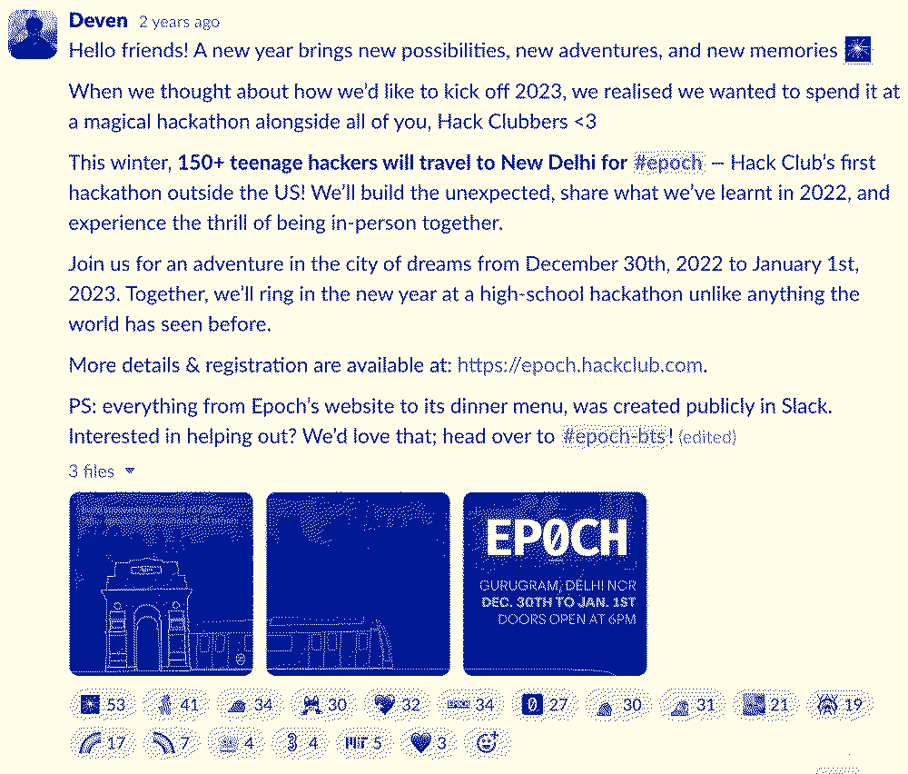
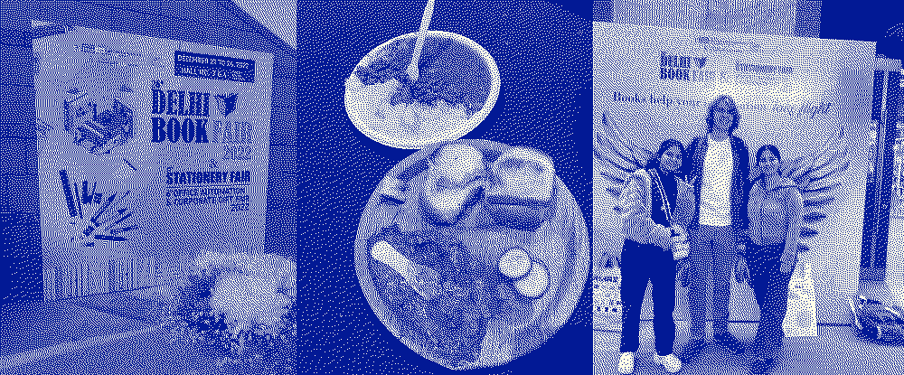
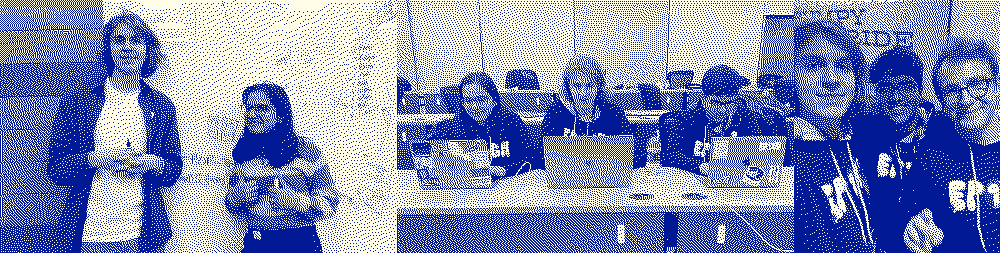
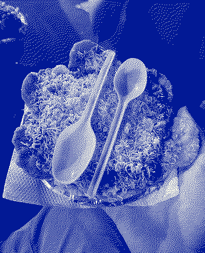

Journeys @
(2023-2024)
Home / Flying-To-India-For-Epoch
On November 11th, 2022, Dev posted this message:

When I saw this message, I had been leading my club for a few months. I thought attending Epoch would be the greatest adventure imaginable, but I did not think it was possible for me. I went on a walk to think about it...
I did not have a passport, I did not have a visa, and I had never left the country before. I also did not have the funds to book a ticket to Delhi & I had never attended an in-person hackathon before.
When thinking through all of these barriers that I would have to overcome to attend this event, I also considered what a great adventure it would be. I had many friends in India who I had made through design / coding discord servers. I remember waking up early morning (4-5AM) before school in 9th & 10th grade getting on calls with a team based out of India (IST Timezone) when working on my first UI design projects. I also had always found Indian culture to be really interesting and something that I wanted like to learn more about.
I decided that I was going to give it a shot and give it everything I've got to make it there. I expected many other American teens would be doing the same (turns out, I was the only one).
The next day, I applied for a flight stipend from Hack Club (& to attend the event), went to the library to get my passport, and started learning more about the India Visa process (side note... India's visa website looks super sketchy imo).
I somehow made it happen! I got my visa days before my flight, and my passport came in time. Hack Club also offered a flight stipend that combined with some funds I had saved up made the trip possible.
I arrived a few days early and I met Sam & Dev. We met in their hotel room (full of the staff team working out last minute logistics) and then took a late-night rickshaw to a nearby restaurants to get some food. At first I felt like a bit of an outsider, but as the pre-event setup went on, I became really close friends with Sam & Dev. Today Sam & Dev are a couple of my closest friends.
I also had a chance to meet my friend Pooja who I had collaborated with online! She made a project called "WireUs" where she & about 50 of her friends made daily coding challenges. I made the UI/UX design for their project. It was really awesome getting to meet an online friend from a couple years prior in-person. We went to a book fair where we had to taxi to this oddly specific location and then get on a bus down a narrow road and then walk for about 20 minutes. The book fair was marvelous. There were books everywhere for super cheap prices ($1-4 dollars a book). I think most of the books were print-copies (I noticed text on some of these pages being a bit tilted). We then also had a delicious meal on the floor of the book fair. This is when I first started to fall in love with Indian food.

The day before the event, I worked with Dev, Sam, and the rest of the organizing team to setup the venue (decorated by Blahaj plushies and fake plants).
The following day, attendees started arriving and I started to meet a bunch of really interesting people. I met Arpan and Vaishnavi and we decided to be a team!

We stayed up super late both nights working on our project: "Coconut". I remember by the second night being so tired that I started falling asleep while talking randomly. I was going mad. We were all at a beginner-level when it comes to programming. The project we built was a pickup line generated that used a HUGE JSON file generated by GPT. This was around the time GPT was first coming out, so it was really cool to see the JSON it generated working in our project. Here's a link to the project: https://coconut-eight.vercel.app/
Somehow our project won the top prize! This was a total shock to me & my team. The way prizes worked is that they were based off of voting. My team member Vaishnavi was THE BEST SALESPERSON of our product and had people generated pick up lines and send them to people while at our project stand. Attendees voted with delicious Indian mango candies (I ate those candies for months after the events, savoring them).
Afterwards, I planned to meet with my teammates & my friend Adham (a friend from another team) in Connaught Place to have some street food. Before leaving, Zach asked if I had a minute. We then went into another room and Zach told me his vision for the future of Hack Club. While listening, I thought it was so cool to hear where this organization that had a huge impact on my life was going. At the end, he asked me to take two weeks to consider interviewing to lead the clubs program for a gap year. He said to only reach back out after the two weeks if I was super serious. I was shocked. I did not know anybody worked at Hack Club other than Zach & Christina (I thought everyone was a volunteer).
I decided to interview to join HQ in Shelburne Vermont, and to my great surprise I got the opportunity to dedicate a year of my life to making clubs awesome! The aspirational thing in Hack Club should never be working at Hack Club. The aspirational thing in Hack Club is building projects with friends. When I think about the things that I am most proud of over the year, it's time the I spent with my friends working on really awesome projects (more on that later in future articles).
I did not mention the opportunity to interview to anyone, and I went out to dinner in Connaught Place with my friends (Vaishnavi & Adham). It was so awesome to take the metro and navigate the transit system with Adham who was from Egypt and was also new to the whole system. There were so many kind people in Delhi who helped me navigate the transport system. We had street food & it was the most delicious food that I've ever had!

tysm Sam & Dev for organizing Epoch :)
Epoch changed my life